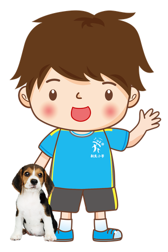
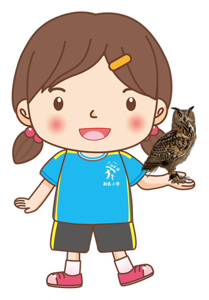

Please join us in welcoming Teacher Chang Kai-Mian (張凱棉老師) to the Hsinmin Elementary family! With rich experience teaching English, Teacher Chang is currently furthering her expertise at National Chiayi University, continuing to grow her skills in bilingual education.
About Teacher Chang 張凱棉老師
目前進修國立嘉義大學外國語言學系雙語教學在職專班及國小教育學程
畢業於國立勤益科技大學流通管理系
田中國小英語教師兼任教學組長 4 年
佳音英語新北斗分校英語老師 4 年
Specialty · 專長
From the classroom to continuing her own studies, Teacher Chang keeps growing so she can bring even richer learning experiences to her students. We are excited for the energy and dedication she will bring to Hsinmin — please give her a warm welcome!
💙📚🌿 Welcome to Hsinmin, Teacher Chang! 🌿📚💙


🎉 歡迎張凱棉老師加入新民國小大家庭！
擁有豐富英語教學經驗的凱棉老師，目前持續進修於國立嘉義大學外國語言學系雙語教學在職專班及國小教育學程，持續充實雙語教學專業，為孩子帶來更多元的學習經驗。🌏📚
教學經歷
▪️ 田中國小英語教師兼任教學組長 4 年
▪️ 佳音英語新北斗分校英語老師 4 年
專長｜英文
從英語教學現場一路累積經驗，也持續精進自己的專業能力，相信凱棉老師的加入，將為新民的孩子帶來更多英語學習的可能與樂趣！💡🌈
在新民，我們相信——每一位老師，都是孩子成長路上的重要陪伴者❤️ 每一次相遇，都能成為孩子最美好的學習風景❤️
🙌 歡迎張凱棉老師加入新民國小！讓我們一起用專業陪伴孩子、用熱情點亮學習，攜手打造更優質、更幸福的新民校園！
Words About Teaching & Growth英語學習角 · 和教學與成長有關的小單字
Six key words — tap 🔊 to listen, then try the conversation and quiz.
六個關鍵字，點 🔊 聽發音，再試試對話和小考。
情境：兩位同學聊起新來的英語老師。